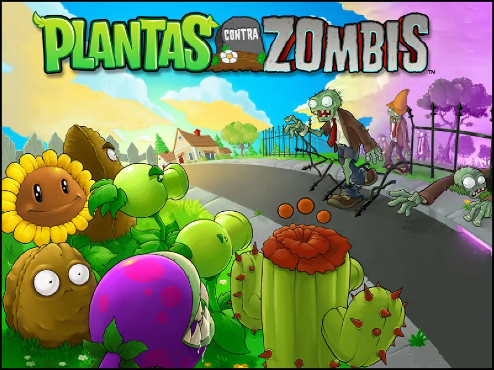
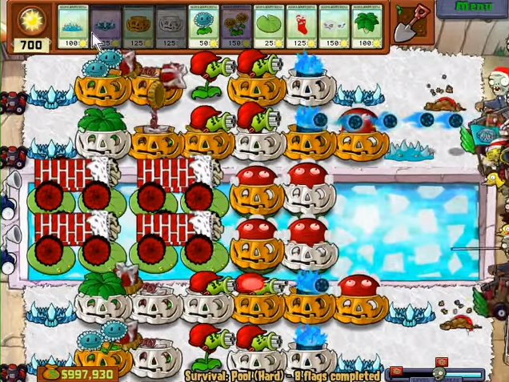
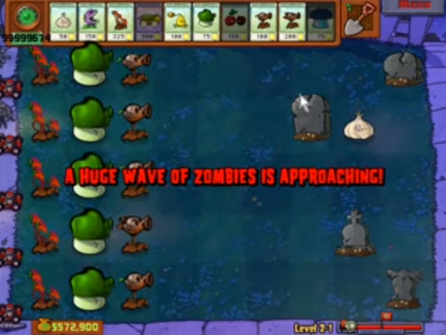
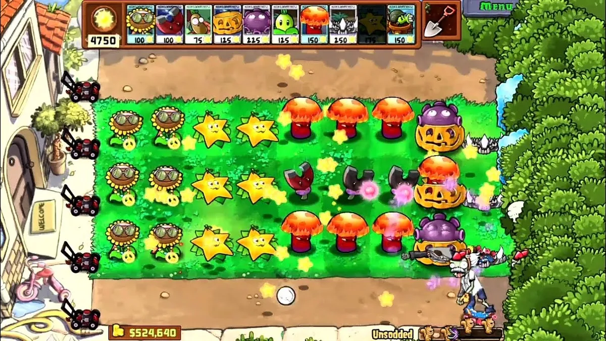

Una pequeña introducción
|  |
|---|
|
Seguramente conoces Plants Vs. Zombies, juego Tower Defense lanzado en 2009 extremadamente popular por sus mecánicas
simples, divertidas y premiado con el GOTY (Game Of The Year). Un juego con tanta popularidad claramente acabaría
dando lugar a una escena de modders, o en otras palabras, gente que busca modificar el juego. Las primeras modificaciones o mods del
juego simplemente modificaban las texturas del juego, como los de navidad y Halloween. |
|  |
| Christmas Mod |
|  |
| Halloween Mod |
|
Pero, al pasar los años, empezaron a surgir mods que eran algo más que paquetes de texturas, cambiando mecánicas del juego, como Brutal Mode o Expanded & Enchanted. |
 |
| Brutal Mode |
|  |
| Expanded & Enchanted |
|
Ante todo esto, al ver cómo había tutoriales del tema, un documento en google con mucha información junto a un servidor de Discord (PvZ1 Mod Assosation) con aún más contenido del tema. El 21/1/2023 empecé a hacer mi propio mod del juego, editando texturas y realizando todo tipo de cambios tanto a las plantas como a los zombis. |
 |
| Esto empieza. |
| Sección principal |
|---|
| Entrada 2 |
| Entrada 3 |
| Entrada 4 |
| Entrada 5 |